丁卯日
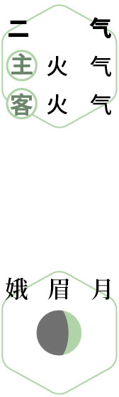
 小宴
小宴仲春｜节气｜ 春分 ｜时间｜ 三月二十日至四月四日
今年春分需特别注意的健康问题：肠道病、失眠、咽炎、闭经、发热、传染病
原料：牛蒡、新鲜荠菜、萝卜缨、干香菇、油、盐、醋。
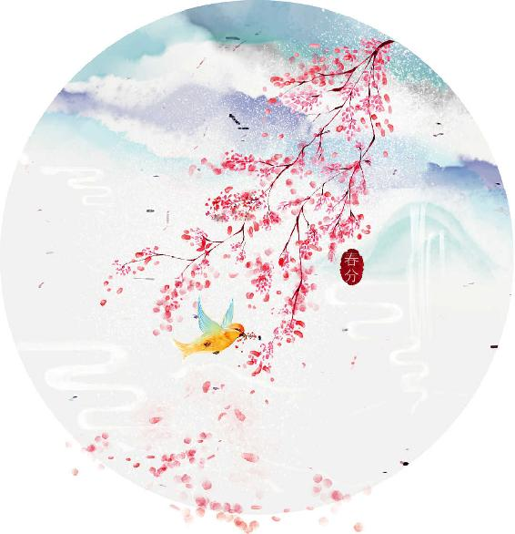
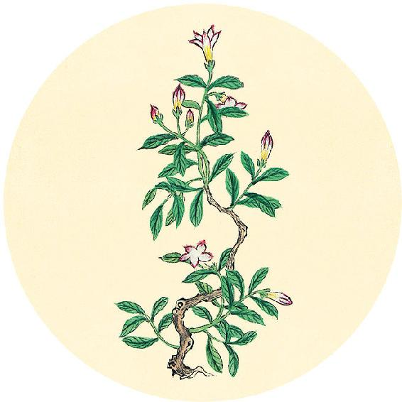
节气食方
防感护生汤
原料：牛蒡半根、新鲜荠菜1把、萝卜缨1把、干香菇3个、油、盐、醋。
做法：
1. 将香菇泡发，切成小块。
2. 牛蒡不去皮，切成滚刀块。
3. 荠菜切段，一定要留根。
4. 锅内放入水，加少许植物油和盐，放入香菇和牛蒡煮开，再放萝卜缨煮20分钟。
5. 最后放入荠菜煮1分钟，关火起锅。
功效：祛风湿，养脾胃，清热解毒，提高免疫力，调理咳嗽、痰黄、咽痛、便秘，预防传染病。
如果没有条件做汤，也可用桑叶牛蒡茶代替（配方见3月7日)。
【释义】西方地区，出产金属和玉石的地方，遍地沙石，是天地阳气收敛之处。当地依山而居，多风沙，水土性质刚强。当地居民不穿丝绵，用毛布和草席，吃肥美的奶肉类食物，身体脂肪较多，因此不易被外邪所伤，而易在身体内部产生疾病，治疗宜用药物。因此药物疗法，也是从西方传来的。
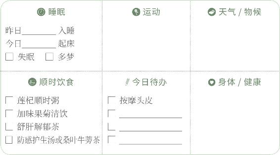

小宴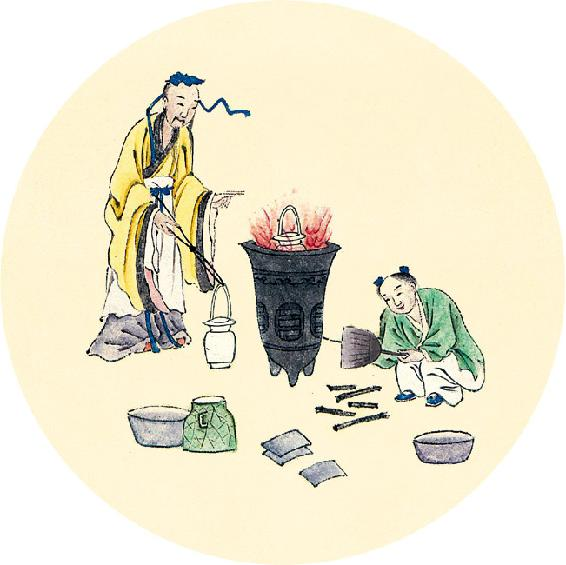
健康提示
今天是世界睡眠日，正当春分节气，恰是容易出现睡眠问题的时节。这段时间，有的人会失眠、早醒，平时睡眠还不错的一些人也可能在这段时间梦特别多。
人体春生夏长，春季睡不好对于大脑的影响很大。大脑通过睡眠才能清除垃圾蛋白，否则会引发记忆力减退、阿尔茨海默病（老年痴呆症）、帕金森病和其他的神经退行性疾病。
北方者，天地所闭藏之域也。其地高陵居，风寒冰冽，其民乐野处而乳食，脏寒生满病，其治宜灸焫（ruò）。故灸焫者，亦从北方来。
——黄帝内经·素问·异法方宜论
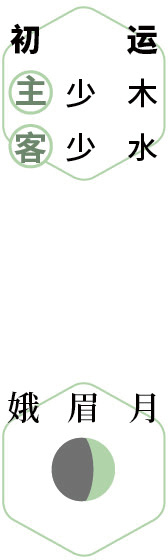
早睡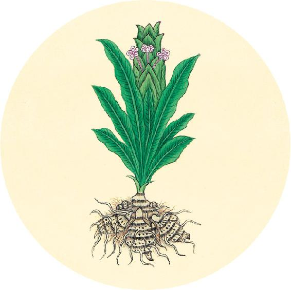
二十四节气茶养生
今年春分节气品茶推荐：茉莉花茶。
茉莉含有的芳香成分有几十种之多，这些香味组合起来功效独到，用古人的话来说就是：“能除胸中一切陈腐之气。”也就是消除不良的体味和口气。
舒肝解郁茶
原料：玫瑰6朵、月季6朵、茉莉花12朵。
做法：开水冲泡饮用。也可与二气保健饮“加味果菊清饮”一同冲泡。
功效：调节情绪，清新口气，疏通血脉，调理睡眠多梦，预防黄褐斑。
【释义】北方地区，是天地阳气闭藏之处。地势高，人们住在山上，风寒冰冻。当地居民喜欢游牧，吃奶制品，内脏受寒，易生胀满的病，治疗宜用艾火灸灼。因此灸焫疗法，也是从北方传来的。
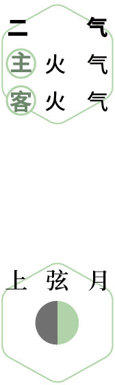
养肝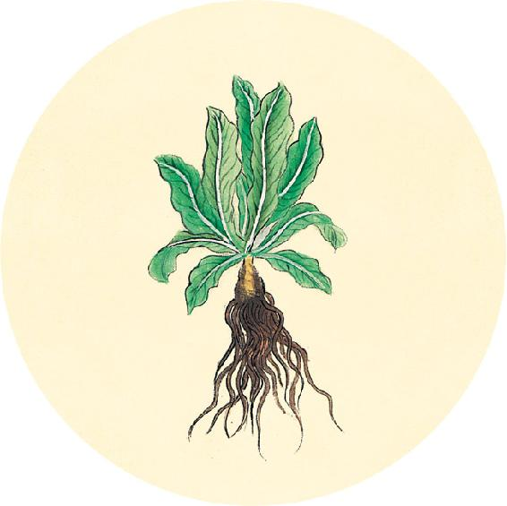
健康提示
春分节气的养生功课：疏肝理气。
今年春分特殊的养生要点——
今年春分节气，天气变化较大，注意避免寒湿降低身体抵抗力，预防传染病。
保养重点：肝、肾、免疫系统。
容易出现的问题：肠道病、失眠、咽炎、闭经、发热、传染病。
南方者，天地所长养，阳之所盛处也。其地下，水土弱，雾露之所聚也。其民嗜酸而食胕（fù），故其民皆致理而赤色，其病挛（luán）痹，其治宜微针。故九针者，亦从南方来。
——黄帝内经·素问·异法方宜论
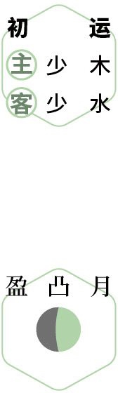
防病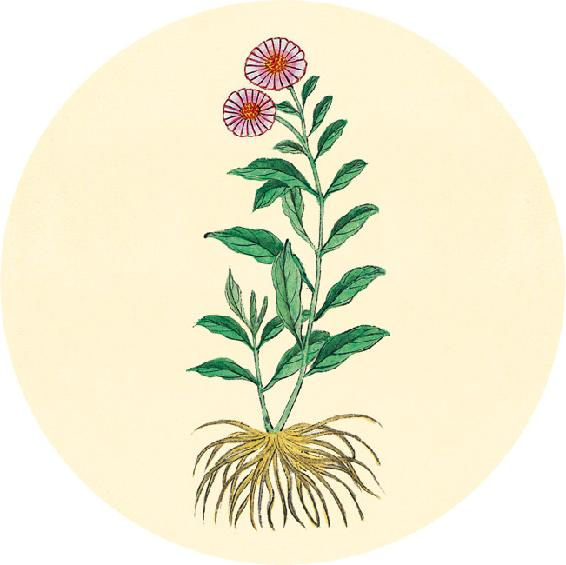
一候反思
新读者：去年秋天的后半段是否出现过明显的睡眠问题？
老读者：按照去年的顺时养生日历2020年11月11日的自测结果，是否在今年日历的春分开篇页记录了“春分到谷雨重点养生”？
如果“是”，今年春分、清明、谷雨三个节气重点调理肝肾，可以常吃银耳羹及桂花葛根粉（做法见7月29日）一直到秋冬季。
【释义】南方地区，是天地阳气长养之处，盛阳所在的地方。地势低，水土卑湿，雾露凝聚。当地居民喜欢酸味，吃发酵腐熟的食物。人们的皮肤腠理致密而色红，易生拘挛、痹证（肢体疼痛麻木）等病，治疗宜用微针。所以九针疗法，也是从南方传来的。
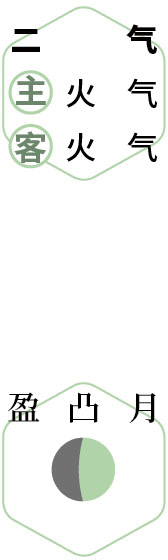
反思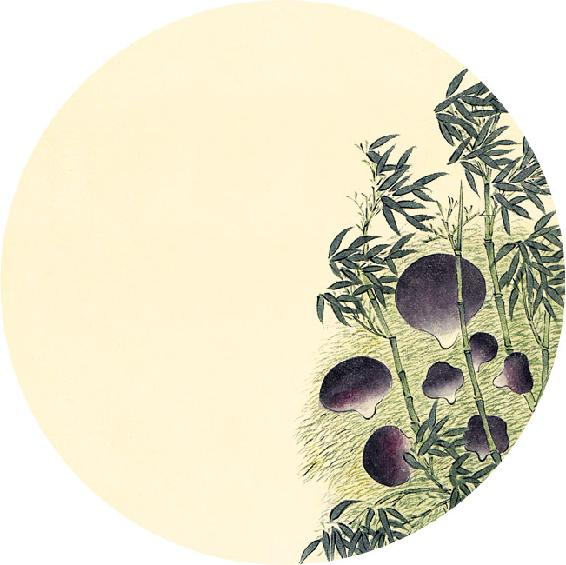
健康提示
从交春分节气当天开始，进入辛丑岁的第二个养生阶段。
二气包含春分、清明、谷雨、立夏四个节气，
历时62天（3月20日6:00—5月21日2:00），
主气——火气；客气——火气。
养生重点：防湿热。
容易出现的问题：传染病（详解在3月26日）。
保健食方：加味果菊清饮（做法见3月30日）。
中央者，其地平以湿，天地所以生万物也众。其民食杂而不劳，故其病多痿厥寒热。其治宜导引按蹻（qiāo），故导引按蹻者，亦从中央出也。
——黄帝内经·素问·异法方宜论
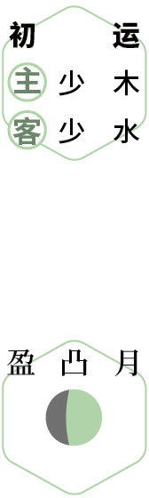
防病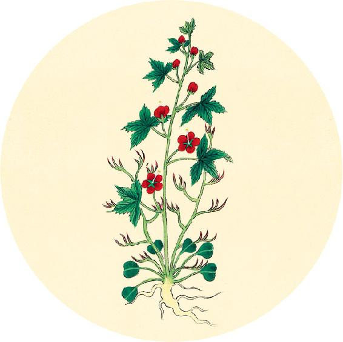
健康提示
辛丑岁二气这两个月，人体本身的内在健康相对良好，但是外部大气候环境雨天雾天多，天气热得早，伴随着几次寒潮降温，病菌容易传播。如果今年的初气阶段（大寒到惊蛰），从冬到春期间天气没有平稳过渡，早春回暖迟或春雨下得晚，那么二气这段时间传染病流行的风险还会增大。各地所发生的疾病，症状相似。
身体有湿的人和肾虚的人要重点防范。
辛丑岁全年养生要点及食方在1月27日、1月28日。
【释义】中央地区，地势平坦多湿，是天地生养万物的地方，物产丰富。当地居民食物种类多，生活闲适，所以多生痿厥（四肢软弱无力、偏瘫）、寒热的病。治疗宜用导引按蹻。因此导引按蹻疗法，也是从中央地区传出的。
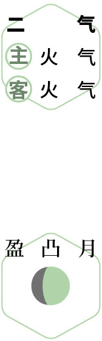
疏肝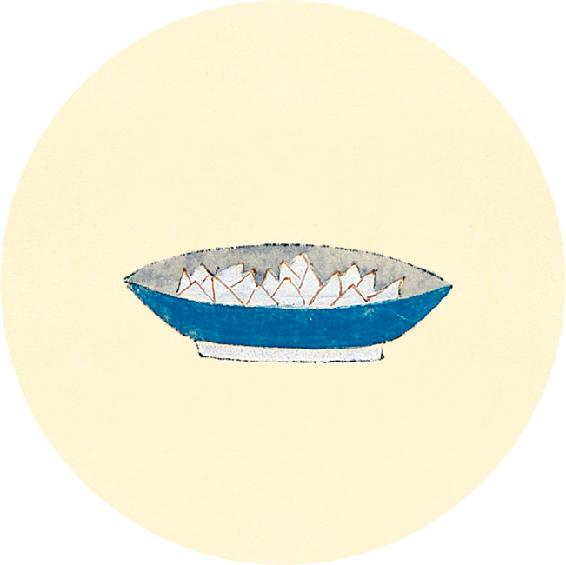
健康提示
春天宜多吃豆芽，排肝毒，提升人体升发之气。自己发的豆芽吃着最放心。
发豆芽很简单，但是要发得鲜嫩好吃，有两个要点：
1. 用重物压着，这样豆芽能长得更粗壮。
2. 全程不见光，这样豆芽会更好吃。
家里闲置的茶壶、电热水壶、煎药罐、矿泉水瓶，都可以用来发豆芽（方法见2月8日和3月28日）。
故圣人杂合以治，各得其所宜，故治所以异而病皆愈者，得病之情，知治之大体也。
——黄帝内经·素问·异法方宜论
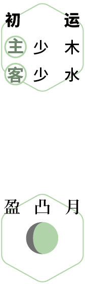
读书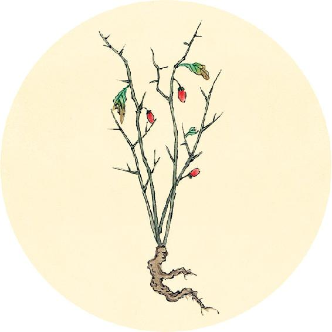
健康提示
用煎药罐发豆芽的小妙招：
1. 用温水把豆子发出小芽后倒入罐子。
2. 每天灌水倒水，盖子一直盖着不揭开。
3. 直到盖子稍微被顶开了，再过一两天芽比较粗了就可以了。
煎药罐是陶的，透气性好，用来发豆芽，还能做到全程不见光，盖子也有一定分量可以压住豆芽。
其他发豆芽的简单方法：
旧烧水壶发豆芽
矿泉水瓶发豆芽
【释义】所以高明的医生会综合各种疗法，根据情况，采取适宜的治疗方法。所以治法虽然不同，疾病却都能痊愈，这是由于能够了解病情，并掌握了治病大法的缘故。
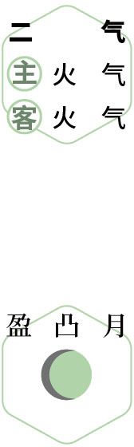
乐春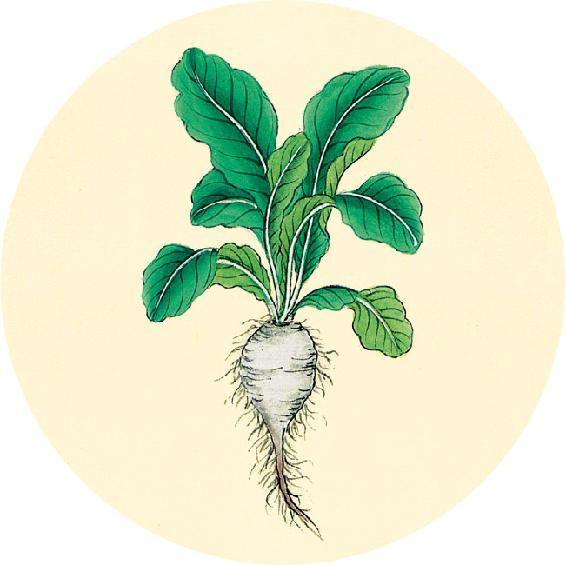
二候反思
身体是否有以下问题：
肝肾囊肿 □ 是 □ 否
脂肪肝 □ 是 □ 否
乳腺增生 □ 是 □ 否
结石 □ 是 □ 否
男性前列腺增生 □ 是 □ 否
女性子宫肌瘤 □ 是 □ 否
女性卵巢囊肿 □ 是 □ 否
女性月经前乳房胀痛 □ 是 □ 否
任何一个答“是”，肉桂陈皮四物饮中加入鸡内金粉同食；在舒肝解郁茶中加入蒲公英根同饮。
以上食方可以坚持吃整年。
往古人居禽兽之间，动作以避寒，阴居以避暑，内无眷慕之累，外无伸官之形，此恬淡之世，邪不能深入也。
——黄帝内经·素问·移精变气论
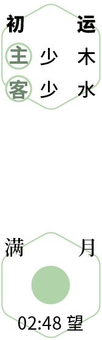
教子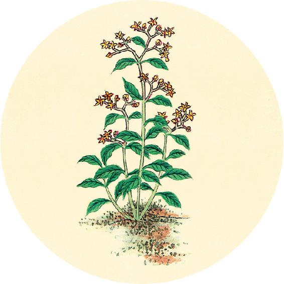
健康提示
辛丑岁二气保健方（春分、清明、谷雨、立夏）
在今年的二气阶段，我们养生的重点是祛湿热，预防传染病（参见3月26日），可以将果菊清饮搭配蒲公英根和牛蒡饮用。
加味果菊清饮（上）
原料:鱼腥草5克、菊花1克、罗汉果1/3个、蒲公英根5克、牛蒡10克。
做法：全部原料一起放入保温杯，冲入沸水闷泡后，代茶饮用。一日1～3剂。
功效见3月31日。
【释义】古时候，人们穴居野外，周围都是禽兽，靠活动来驱除寒冷，住在阴凉地方来躲避暑热。人们内心没有眷恋思慕的情志牵累，形体没有求取功名的辛苦形役，这是恬淡的时代，外邪侵犯人体不容易深入。
 防病
防病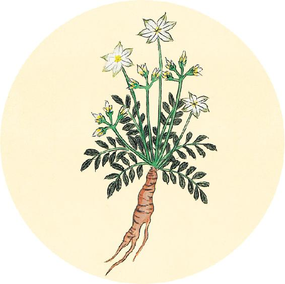
健康提示
加味果菊清饮（下）
功效：祛湿热、消肿毒、通便秘、消炎、排毒、降脂、祛痘、清肺，预防肠道病毒感染。
适合人群：经常长痘，咳嗽痰黄、小便黄、白带黄，咽炎、胆囊炎、胃炎，吸烟，三高，空气污染及雾霾地区的人日常饮用。
注意：风寒感冒急性期停饮，改喝葱姜陈皮水；女性经期停饮。
今年全年养生重点及食方在1月27日、1月28日。
当今之世不然，忧患缘其内，苦形伤其外，又失四时之从，逆寒暑之宜。贼风数至，虚邪朝夕，内至五藏骨髓，外伤空窍肌肤，所以小病必甚，大病必死。
——黄帝内经·素问·移精变气论
饮花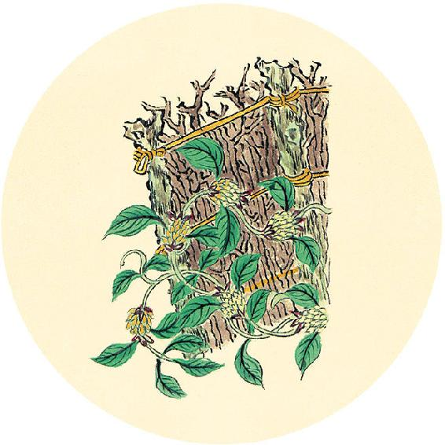
食材准备
3天后进入清明节气。
1.清明果/艾粑
原料：野艾或田艾（清明菜）、糯米粉、红糖。
2.节气养生茶
原料：玫瑰、月季、茉莉。
3.腌制咸鸭蛋
原料：鸭蛋、白酒、盐。
4.上巳节食方：荠菜鸡蛋汤
原料：荠菜、鸡蛋、红枣、生姜。
5.兰汤沐浴
原料：藿香、佩兰、苍术等芳香化湿抗病毒的中药。
6. 辛丑岁二气保健方：加味果菊清饮（从春分吃到小满前日，做法见3月30日）
原料：蒲公英根、牛蒡、罗汉果、菊花、鱼腥草。
7.辛丑岁全年保健粥：莲杞顺时粥（做法见2月11日）
原料：枸杞子、莲子、炒荷叶、川陈皮、茯苓、粥料。
【释义】当今之世就不同了，人们内心为忧虑所累，形体被劳苦所伤，再加上不顺从四季的节序，违背寒热的变化，被贼风虚邪不断地侵袭，内至五脏骨髓，外伤孔窍肌肤，所以小病会发展为重病，大病会发展到危及生命。
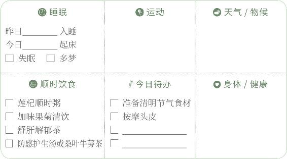
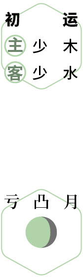
静养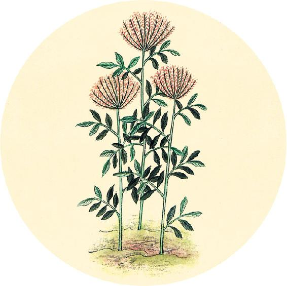
节日食方
明天是寒食节。可将寒食粥原料加入辛丑岁全年保健粥中同煮食用。
寒食平安粥
原料：大麦仁、甜杏仁、麦芽糖或蜂蜜。
做法：
1. 将大麦仁和杏仁煮成粥。
2. 加麦芽糖或蜂蜜调味。
功效：健脾益气、消食和胃、润肠排毒、滋养五脏、改善睡眠。
色以应日，脉以应月，常求其要，则其要也。
——黄帝内经·素问·移精变气论
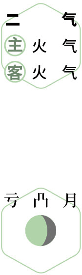
静养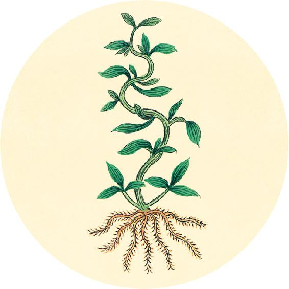
节气总结备
喝防感护生汤的次数________
喝舒肝解郁茶的次数________
喝莲杞顺时粥的次数________
喝加味果菊清饮的次数________
户外运动的次数________
是否郊游踏青 ⃞ 是 ⃞ 否
身体哪些方面有改善________________________________________
今天进入辛丑岁的第二运（主运：太火；客运：太木）。关于“运”的知识参见4月26日。
【释义】气色就像太阳一样有阴有晴，脉息就像月亮一样有盈有亏。始终注意察色按脉，这就是诊法的要领。
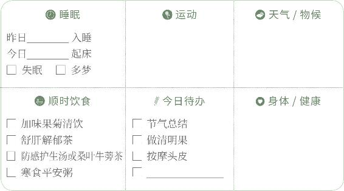
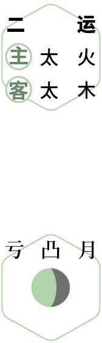
食粥